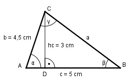

Aufgabe 143 Berechnen Sie den Winkel γ, wenn b = 4,5 cm, c = 5 cmund hc = 3 cm.

hc 3 cm sin α = ---- = -------- = 0,6667 --> α = 41,8° b 4,5 cm Fall SWS: Cosinussatz: a2 = b2 + c2 - 2 * b * c * cos α a2 = 4,52 + 52 - 2 * 4,5 + 5 * cos 41,8° a2 = 4,52 + 52 - 2 * 4,5 * 5 * 0,7455 a2 = 11,7 | √ a = 3,4 cm Sinussatz: a c ------- = ------- |*sinγ sin α sin γ a * sinγ ---------- = c |*sin α sin α a * sin γ = c * sin α| :a c * sin α sin γ = ------------- = a 5 cm * sin 41,8° 5 cm * 0,6665 = ------------------ = --------------- = 0,9801 3,4 cm 3,4 cm --> γ = 78,6°